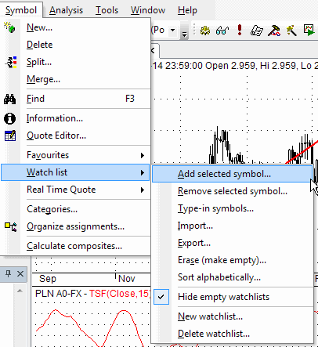
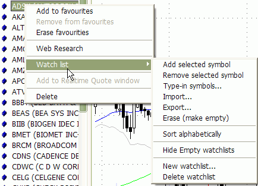
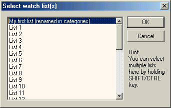
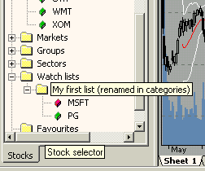
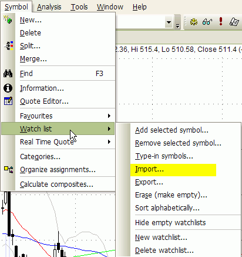
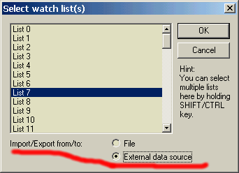
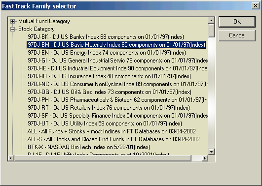
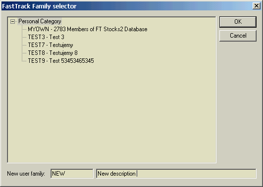

AmiBroker 5.00 now uses a new watch list system. Watch lists differ from other kinds of categories (such as groups, markets, industries, or sectors) in that you can assign a single symbol to more than one watch list.
You can use an UNLIMITED number of watch lists, with their names definable in Symbol->Categories window. The members of each watch list are shown in the symbol tree under "Watch lists" leaf.
Watch lists are now stored as text files inside the "Watchlists" folder within the database. The folder contains any number of .TLS files with the watch lists themselves, and index.txt defines the order of watch lists. You can add your own .tls file (one symbol per line), and AmiBroker will update index.txt automatically (adding any new watch lists at the end). The .TLS files can also be opened in AmiQuote.
Watch lists remember the order in which symbols were added, so for example,
if you sort an AA result list in some order and then you "add symbols to watch
list," the order will be kept in the watch list.
Adding / removing watch lists
You can now add/delete watch lists using Symbol->Watch List->New Watchlist and Symbol->Watch List->Delete Watchlist menu, or from the watch list context menu. Note that if you have done any customization to the menu, you may need to go to Tools->Customize, select "Menu Bar," and press "Reset" button for these new menu items to appear.

Adding tickers to watch lists
You can easily add a ticker to the watch list by simply clicking the right mouse button over the item in the symbol tree and choosing Watch List->Add selected symbol option:

After choosing this option, a watch list selector window will appear:

Here you should select the list you want to add the symbol to. Note that you can add one symbol to multiple lists at once by holding the CTRL key while clicking on the list items. After clicking OK, the selected symbol (MSFT) appears in the watch list of your choice:

You can also type-in symbols directly into the watch list using Symbol->Watch List->Type-in option. Symbols should be comma-separated. You can also right-click over the watch list name in the workspace tree to type in symbols directly into the watch list.
Sorting tickers in a watch list
You can now alphabetically sort the symbols in the watch list - right-click on the watch list and select "Sort Alphabetically"
Removing tickers from watch lists
Removing symbols from the watch list is as easy as adding them. Just right-click on the list member and select Remove from watch list(s). Then a similar list selector window will appear, showing only those lists that the currently selected symbol belongs to. You can now select one or more lists, and the symbol will be removed from the list(s).
Erasing watch lists
Sometimes you may want to clear (or erase) the whole watch list. Then just select Symbol->Watch List->Erase (empty) option. In the watch list selector window, mark the list(s) you want to clear and click OK. This way, selected watch list(s) become empty.
Hiding/Unhiding empty watch lists
By default, empty watch lists are shown in the symbol tree, but you can hide them by right-clicking on a watch list in the symbol tree and selecting the "Hide Empty Watchlists" menu option. To unhide, select this option again.
Using watch lists in Automatic Analysis window
AmiBroker gives you a very easy way to store the results of scanning, backtesting, and exploration into a watch list with a single mouse click - just run your favorite AFL formula over the whole database and right-click on the results list to see the following menu:
When you choose Add all/selected results to watch list, a watch list selector will appear where you select the list to which symbols should be added. Then, after clicking OK, all symbols filtered by your trading rules will automatically appear in the watch list of your choice.
You can also use the option Replace watch list with the results/selected results
This new option empties the watch list before adding results. The order of
symbols in the result list is preserved in the watch list.
How to import/export a watch list from/to a file
IMPORT WATCHLIST FROM FILE
1. Choose Symbol->Watch List->Import menu, or right-click over a watch
list in the tree and choose Import.

2. Choose a destination watch list
3. In the file dialog that will appear, pick a .TLS, .LST, .TXT, or .CSV file
.TLS, .CSV, .TXT files should have one ticker symbol per line and
no other
fields.
.LST files are Quotes-Plus standard, comma-separated list files that have the
ticker
symbol
in
the
first
column
and some additional data in remaining columns. AmiBroker reads just the first column
and ignores the rest.
4. Click OK.
EXPORT WATCHLIST TO FILE
1. Choose Symbol->Watch List->Export menu.
or right-click over a watch list in the tree and choose Export.
2. Choose a source watch list and switch to "External data source"
3. In the file dialog, choose the file to export to. The generated file will be
a simple ASCII file with one ticker symbol per line.
How to import/export a watch list from/to an external database
ATTENTION: It works ONLY if you have the "Data source"
set to the "Fast Track" plugin in File->Database Settings (and if you
have a FastTrack database installed, of course).
IMPORT FAMILY FROM FASTTRACK
1. Choose Symbol->Watch List->Import menu, or right-click over a watch list
in the tree and choose Import.
2. Choose a destination watch list and switch to "External data source"

3. In the dialog that will appear, unfold a category and select the family
you want to import symbols from:

4. Click OK.
EXPORT A WATCHLIST TO A FASTTRACK FAMILY
1. Choose Symbol->Watch List->Export menu.
or right-click over a watch list in the tree and choose Export.
2. Choose a source watch list and switch to "External data source"
3. Now either type in the new personal family name in "New user family"
(and the description in the field next to it) OR choose an existing
personal family from the list.
